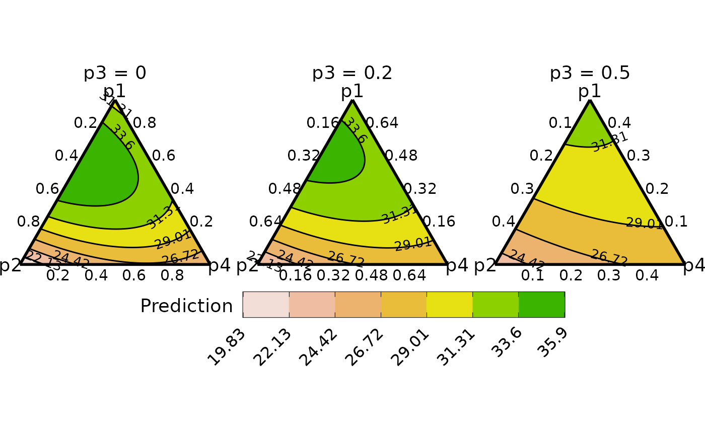
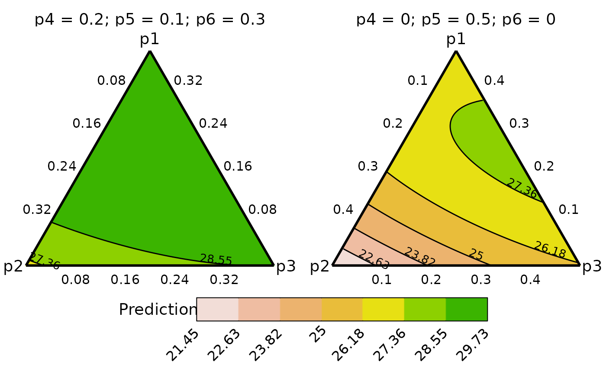
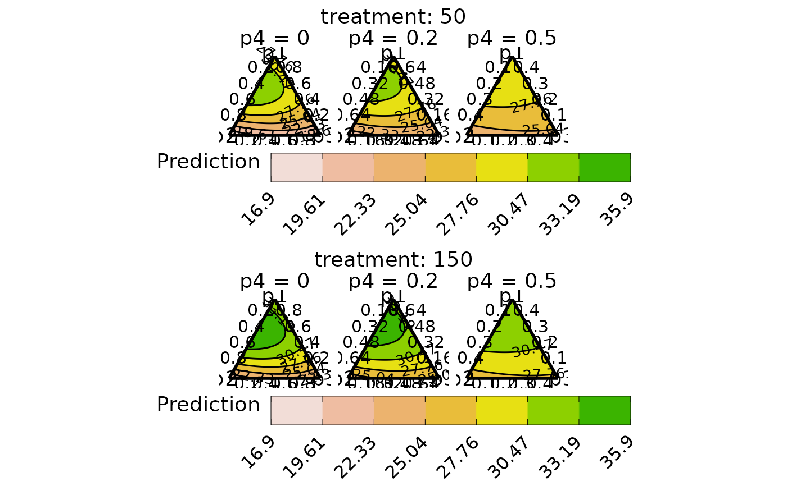

Conditional ternary diagrams
conditional_ternary_plot.RdThe helper function for plotting conditional ternary diagrams. The output of
the `conditional_ternary_data` should be passed here to
visualise the n-dimensional simplex space as 2-d slices showing the change
in the response across any three variables, when the other variables are
conditioned to have fixed values.
Usage
conditional_ternary_plot(
data,
col_var = ".Pred",
nlevels = 7,
colours = NULL,
lower_lim = NULL,
upper_lim = NULL,
tern_labels = colnames(data)[1:3],
contour_text = FALSE,
show_axis_labels = TRUE,
show_axis_guides = FALSE,
points_size = 2,
axis_label_size = 4,
vertex_label_size = 5,
nrow = 0,
ncol = 0
)Arguments
- data
A data-frame which is the output of the `conditional_ternary_data` function.
- col_var
The column name containing the variable to be used for colouring the contours or points. The default is ".Pred".
- nlevels
The number of levels to show on the contour map.
- colours
A character vector or function specifying the colours for the contour map or points. The number of colours should be same as `nlevels` if (`show = "contours"`).
The default colours scheme is theterrain.colors()for continuous variables and an extended version of the Okabe-Ito colour scale for categorical variables.- lower_lim
A number to set a custom lower limit for the contour (if `show = "contours"`). The default is minimum of the prediction.
- upper_lim
A number to set a custom upper limit for the contour (if `show = "contours"`). The default is maximum of the prediction.
- tern_labels
A character vector containing the labels of the vertices of the ternary. The default is the column names of the first three columns of the data, with the first column corresponding to the top vertex, second column corresponding to the left vertex and the third column corresponding to the right vertex of the ternary.
- contour_text
A boolean value indicating whether to include labels on the contour lines showing their values (if `show = "contours"`). The default is
FALSE.- show_axis_labels
A boolean value indicating whether to show axis labels along the edges of the ternary. The default is
TRUE.- show_axis_guides
A boolean value indicating whether to show axis guides within the interior of the ternary. The default is
FALSE.- points_size
If showing points, then a numeric value specifying the size of the points.
- axis_label_size
A numeric value to adjust the size of the axis labels in the ternary plot. The default size is 4.
- vertex_label_size
A numeric value to adjust the size of the vertex labels in the ternary plot. The default size is 5.
- nrow
Number of rows in which to arrange the final plot (when `add_var` is specified).
- ncol
Number of columns in which to arrange the final plot (when `add_var` is specified).
Value
A ggmultiplot (ggplot if single plot is returned) class object or data-frame (if `plot = FALSE`)
Examples
library(DImodels)
## Load data
data(sim4)
## Fit model
mod <- glm(response ~ 0 + (p1 + p2 + p3 + p4 + p5 + p6)^2, data = sim4)
## Create data for slicing
## We only condition on the variable "p3"
plot_data <- conditional_ternary_data(prop = c("p1", "p2", "p3", "p4", "p5", "p6"),
tern_vars = c("p1", "p2", "p4"),
conditional = data.frame("p3" = c(0, 0.2, 0.5)),
model = mod,
resolution = 1)
#> ✔ Finished data preparation.
## Create plot
conditional_ternary_plot(data = plot_data)
#> ✔ Created plot.

## Condition on multiple variables
cond <- data.frame(p4 = c(0, 0.2), p5 = c(0.5, 0.1), p6 = c(0, 0.3))
cond
#> p4 p5 p6
#> 1 0.0 0.5 0.0
#> 2 0.2 0.1 0.3
plot_data <- conditional_ternary_data(prop = c("p1", "p2", "p3", "p4", "p5", "p6"),
tern_vars = c("p1", "p2", "p3"),
conditional = cond,
model = mod,
resolution = 1)
#> ✔ Finished data preparation.
## Create plot
conditional_ternary_plot(data = plot_data)
#> ✔ Created plot.

## Create multiple plots for additional variables using `add_var`
## Fit model
# \donttest{
mod <- glm(response ~ 0 + (p1 + p2 + p3 + p4 + p5 + p6)^2 + treatment,
data = sim4)
## Notice the additional `.add_str_ID` column
plot_data <- conditional_ternary_data(prop = c("p1", "p2", "p3", "p4", "p5", "p6"),
tern_vars = c("p1", "p2", "p3"),
conditional = data.frame("p4" = c(0, 0.2, 0.5)),
add_var = list("treatment" = c(50, 150)),
model = mod,
resolution = 1)
#> ✔ Finished data preparation.
## Create plot
## Use nrow to align plots
conditional_ternary_plot(data = plot_data, nrow = 2)
#> ✔ Created all plots.

# }